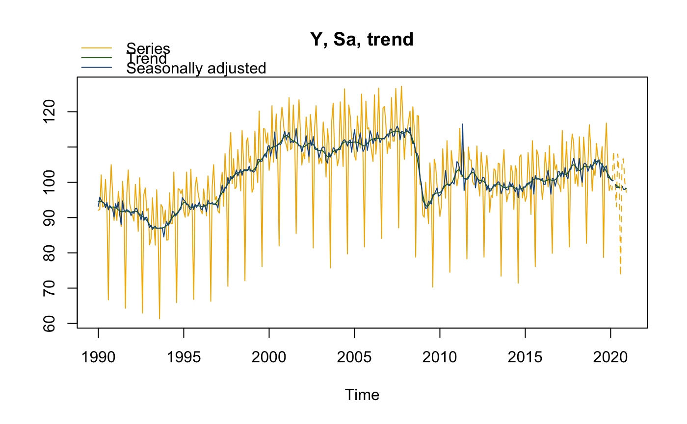
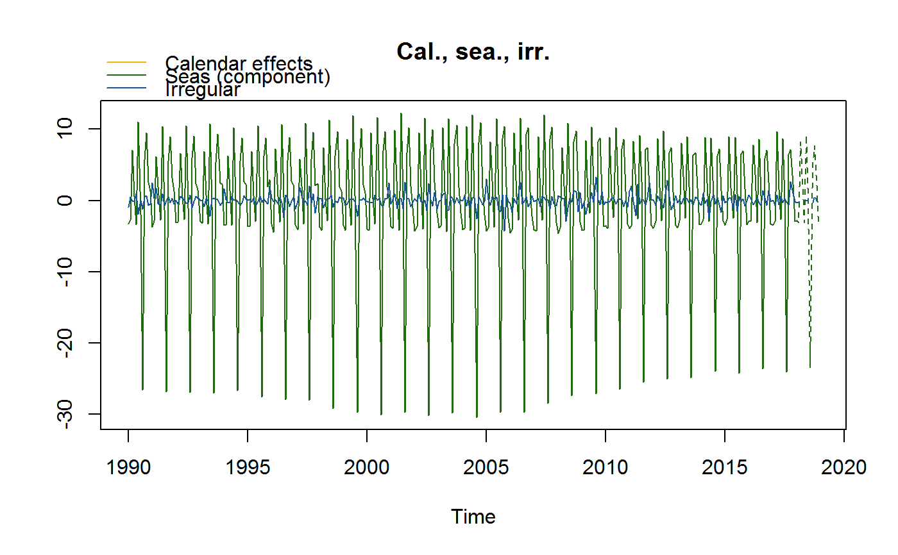
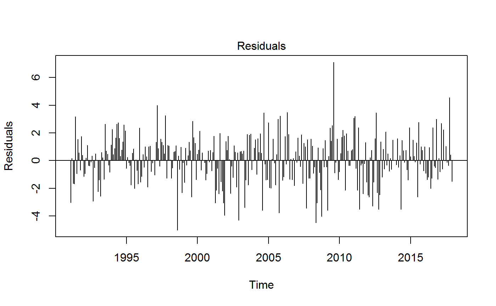
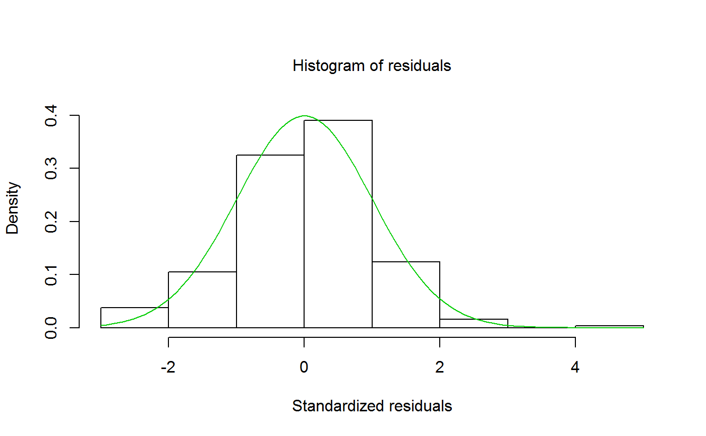
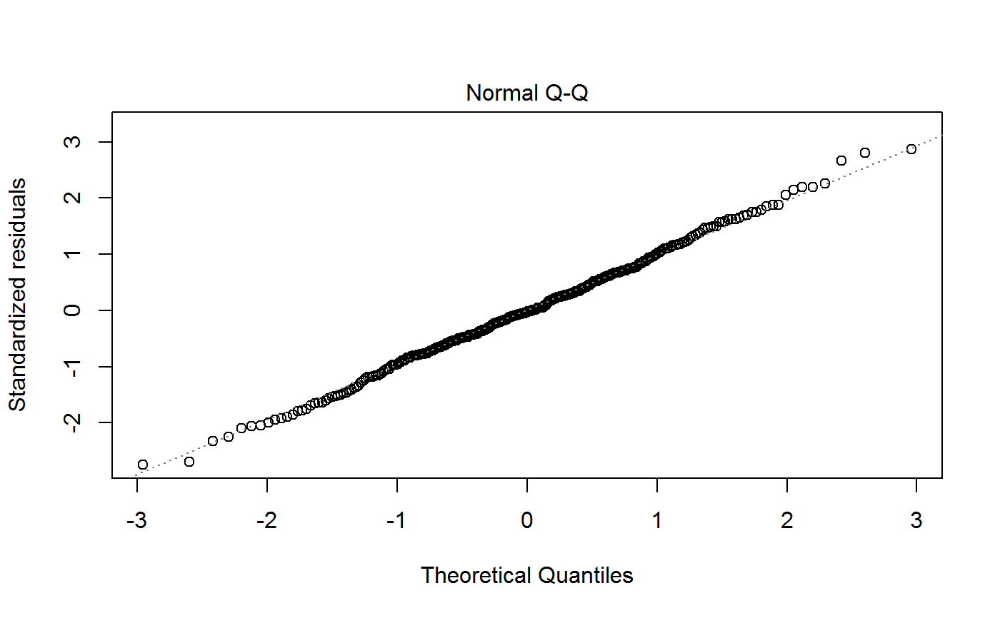
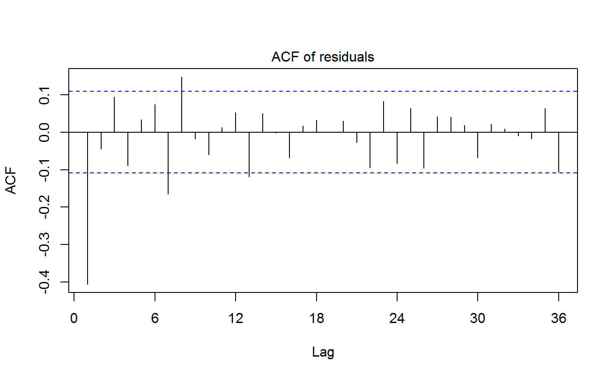
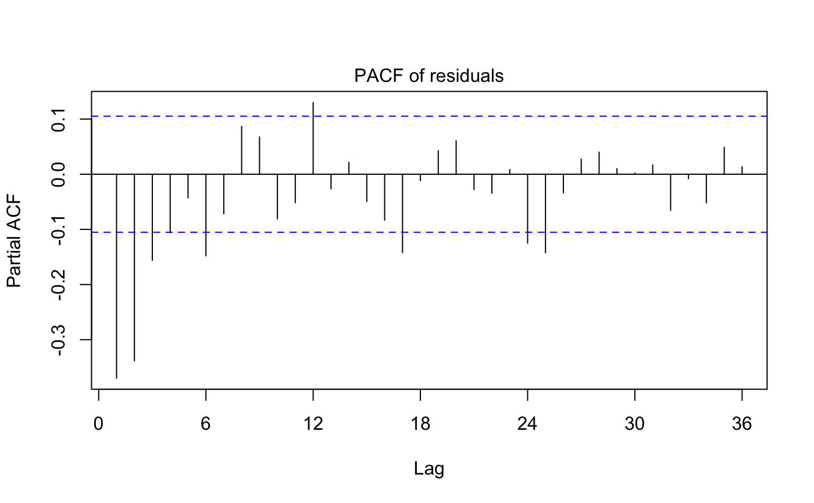
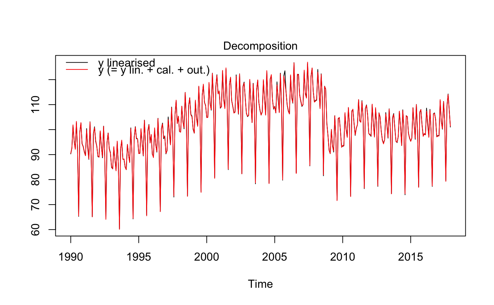

x13/x13_def estimates the seasonally adjusted series (sa) with the X-13ARIMA-SEATS method.
This is achieved by decomposing the time series (y) into the: trend-cycle (t), seasonal component (s) and irregular component (i).
The final seasonally adjusted series shall be free of seasonal and calendar-related movements.
x13(series, spec, userdefined = NULL) x13_def(series, spec = c("RSA5c", "RSA0", "RSA1", "RSA2c", "RSA3", "RSA4c"), userdefined = NULL)
Arguments
| series | a univariate time series |
|---|---|
| spec | model specification X13. For the function:
|
| userdefined | vector with characters for additional output variables (see |
Value
x13/x13_def returns an object of class c("SA","X13"), a list containing the following components:
object of class c("regarima","X13"). See Value of the function regarima.
object of class "decomposition_X11", six elements list:
specificationlist with the X11 algorithm specification. See also functionx13_specmodedecomposition modemstatsmatrix with the M statisticssi_ratiotime series matrix (mts) with thed8andd10seriess_filterseasonal filterst_filtertrend filter
object of class c("final","mts","ts","matrix"). Matrix with the final results of the seasonal adjustment.
It includes time series: original time series (y), forecast of the original series (y_f), trend (t), forecast of the trend (t_f),
seasonally adjusted series (sa), forecast of the seasonally adjusted series (sa_f),
seasonal component (s), forecast of the seasonal component (s_f), irregular component (i) and the forecast of the irregular component (i_f).
object of class "diagnostics", list with three type of diagnostics tests:
variance_decompositiondata.frame with the tests on the relative contribution of the components to the stationary portion of the variance in the original series, after the removal of the long term trend.residuals_testdata.frame with the tests on the presence of seasonality in the residuals (includes the statistic, p-value and parameters description)combined_testcombined tests for stable seasonality in the entire series. Two elements list with:tests_for_stable_seasonality- data.frame with the tests (includes the statistic, p-value and parameters description) andcombined_seasonality_test- the summary.
Details
The first step of the seasonal adjustment consist of pre-adjusting the time series by removing from it the deterministic effects by means of a regression model with ARIMA noise (RegARIMA, see: regarima).
In the second part, the pre-adjusted series is decomposed into the following components: trend-cycle (t), seasonal component (s) and irregular component (i). The decomposition can be: additive (\(y = t + s + i\)), multiplicative (\(y = t * s * i\)), log-additive (\(log(y) = log(t)+log(s)+log(i)\)) or pseudo-additive (\(y = t*(s+i-1)\)).
The final seasonally adjusted series (sa) shall be free of seasonal and calendar-related movements.
In the X13 method, the X11 algorithm (second step) decomposes the time series by means of linear filters. More information on the method can be found on the U.S. Census Bureau website.
As regards the available predefined JDemetra+ X13 model specifications (for the function x13_def), they are described in the table below.
| Identifier | | | Log/level detection | | | |||
| Outliers detection | | | Calender effects | | | ARIMA | ||
| RSA0 | | NA | | | ||||
| NA | | | NA | | | Airline(+mean) | ||
| RSA1 | | automatic | | AO/LS/TC | | NA | | | Airline(+mean) | |
| RSA2c | | automatic | | AO/LS/TC | | 2 td vars + Easter | | Airline(+mean) | ||
| RSA3 | | automatic | | AO/LS/TC | | NA | | | automatic | |
| RSA4c | | automatic | | AO/LS/TC | | 2 td vars + Easter | | automatic | ||
| RSA5c | | automatic | | AO/LS/TC | | 7 td vars + Easter | | automatic | Identifier |
References
Info on JDemetra+, usage and functions: https://ec.europa.eu/eurostat/cros/content/documentation_en
BOX G.E.P. and JENKINS G.M. (1970), "Time Series Analysis: Forecasting and Control", Holden-Day, San Francisco.
BOX G.E.P., JENKINS G.M., REINSEL G.C. and LJUNG G.M. (2015), "Time Series Analysis: Forecasting and Control", John Wiley & Sons, Hoboken, N. J., 5th edition.
See also
Examples
myseries <- ipi_c_eu[, "FR"] mysa <- x13_def(myseries, spec = "RSA5c")myspec1 <- x13_spec(mysa, tradingdays.option = "WorkingDays", usrdef.outliersEnabled = TRUE, usrdef.outliersType = c("LS","AO"), usrdef.outliersDate = c("2008-10-01", "2002-01-01"), usrdef.outliersCoef = c(36, 14), transform.function = "None") mysa1 <- x13(myseries, myspec1) mysa1#> RegARIMA #> y = regression model + arima (0, 1, 1, 0, 1, 1) #> Log-transformation: no #> Coefficients: #> Estimate Std. Error #> Theta(1) -0.5367 0.048 #> BTheta(1) -0.5083 0.050 #> #> Estimate Std. Error #> Easter [1] -1.169 0.338 #> AO (9-2008) 31.410 2.181 #> LS (9-2008) -56.648 2.256 #> TC (9-2008) 24.181 3.256 #> LS (2-2002) 14.708 1.526 #> LS (12-2001) -14.648 1.681 #> AO (12-2001) 13.030 1.731 #> LS (5-2008) -5.485 1.296 #> #> Fixed outliers: #> Coefficients #> LS (10-2008) 36 #> AO (1-2002) 14 #> #> #> Residual standard error: 1.729 on 323 degrees of freedom #> Log likelihood = -637.1, aic = 1296 aicc = 1297, bic(corrected for length) = 1.274 #> #> #> #> Decomposition #> Monitoring and Quality Assessment Statistics: #> M stats #> M(1) 0.055 #> M(2) 0.041 #> M(3) 0.926 #> M(4) 0.621 #> M(5) 0.724 #> M(6) 0.215 #> M(7) 0.074 #> M(8) 0.208 #> M(9) 0.056 #> M(10) 0.158 #> M(11) 0.146 #> Q 0.297 #> Q-M2 0.329 #> #> Final filters: #> Seasonal filter: 3x5 #> Trend filter: 13 terms Henderson moving average #> #> #> Final #> Last observed values #> y sa t s i #> Jan 2017 97.4 100.6172 100.6174 -3.2172329 -0.0001992082 #> Feb 2017 97.5 100.3127 101.0283 -2.8126932 -0.7155966863 #> Mar 2017 112.0 102.5469 101.4894 9.4530696 1.0575376567 #> Apr 2017 103.0 101.0897 101.9282 1.9103111 -0.8385432983 #> May 2017 100.4 103.0319 102.3136 -2.6318733 0.7182480125 #> Jun 2017 111.2 102.4926 102.6921 8.7074293 -0.1994894034 #> Jul 2017 103.4 103.1596 103.0816 0.2404277 0.0779236963 #> Aug 2017 79.3 103.2483 103.5055 -23.9483256 -0.2572170473 #> Sep 2017 109.7 103.5536 103.9555 6.1464361 -0.4019376040 #> Oct 2017 114.0 106.6886 104.3955 7.3113786 2.2931579296 #> Nov 2017 107.7 105.4631 104.7505 2.2369236 0.7125546908 #> Dec 2017 101.4 104.7490 105.0214 -3.3490189 -0.2723590878 #> #> Forecasts: #> y_f sa_f t_f s_f i_f #> Jan 2018 101.96630 105.0963 105.1795 -3.1299775 -0.083200162 #> Feb 2018 102.23632 105.1464 105.2838 -2.9100563 -0.137428535 #> Mar 2018 113.85794 105.5026 105.3966 8.3553336 0.105971540 #> Apr 2018 108.47477 105.4896 105.5573 2.9851827 -0.067754048 #> May 2018 103.22164 105.7963 105.7844 -2.5746309 0.011859024 #> Jun 2018 114.64042 106.0073 106.0629 8.6331483 -0.055612674 #> Jul 2018 106.53519 106.3942 106.3666 0.1410119 0.027594337 #> Aug 2018 82.77073 106.6890 106.6849 -23.9182264 0.004061745 #> Sep 2018 112.79551 106.7018 106.9859 6.0936895 -0.284129714 #> Oct 2018 115.13202 107.7516 107.2471 7.3803800 0.504589345 #> Nov 2018 109.87965 107.5136 107.4572 2.3660966 0.056314698 #> Dec 2018 103.97193 107.3744 107.6093 -3.4024325 -0.234923742 #> #> #> Diagnostics #> Relative contribution of the components to the stationary #> portion of the variance in the original series, #> after the removal of the long term trend #> Trend computed by Hodrick-Prescott filter (cycle length = 8.0 years) #> Component #> Cycle 1.557 #> Seasonal 39.219 #> Irregular 0.362 #> TD & Hol. 0.018 #> Others 61.971 #> Total 103.128 #> #> Combined test in the entire series #> Non parametric tests for stable seasonality #> P.value #> Kruskall-Wallis test 0.000 #> Test for the presence of seasonality assuming stability 0.000 #> Evolutive seasonality test 0.032 #> #> Identifiable seasonality present #> #> Residual seasonality tests #> P.value #> qs test on sa 1.000 #> qs test on i 1.000 #> f-test on sa (seasonal dummies) 0.997 #> f-test on i (seasonal dummies) 0.965 #> Residual seasonality (entire series) 0.993 #> Residual seasonality (last 3 years) 0.922 #> f-test on sa (td) 0.001 #> f-test on i (td) 0.006 #> #> #> Additional output variables#> y = regression model + arima (0, 1, 1, 0, 1, 1) #> #> Model: RegARIMA - X13 #> Estimation span: from 1-1990 to 12-2017 #> Log-transformation: no #> Regression model: no mean, no trading days effect, no leap year effect, Easter effect, outliers(7) #> #> Coefficients: #> ARIMA: #> Estimate Std. Error T-stat Pr(>|t|) #> Theta(1) -0.53675 0.04770 -11.25 <2e-16 *** #> BTheta(1) -0.50830 0.04961 -10.25 <2e-16 *** #> --- #> Signif. codes: 0 '***' 0.001 '**' 0.01 '*' 0.05 '.' 0.1 ' ' 1 #> #> Regression model: #> Estimate Std. Error T-stat Pr(>|t|) #> Easter [1] -1.1686 0.3385 -3.452 0.000629 *** #> AO (9-2008) 31.4099 2.1812 14.400 < 2e-16 *** #> LS (9-2008) -56.6477 2.2561 -25.109 < 2e-16 *** #> TC (9-2008) 24.1814 3.2563 7.426 1.00e-12 *** #> LS (2-2002) 14.7081 1.5257 9.640 < 2e-16 *** #> LS (12-2001) -14.6482 1.6811 -8.714 < 2e-16 *** #> AO (12-2001) 13.0297 1.7312 7.527 5.23e-13 *** #> LS (5-2008) -5.4848 1.2957 -4.233 3.01e-05 *** #> --- #> Signif. codes: 0 '***' 0.001 '**' 0.01 '*' 0.05 '.' 0.1 ' ' 1 #> Coefficients #> LS (10-2008) 36 #> AO (1-2002) 14 #> #> #> Residual standard error: 1.729 on 11 degrees of freedom #> Log likelihood = -637.1, aic = 1296, aicc = 1297, bic(corrected for length) = 1.274 #>myspec2 <- x13_spec(mysa, automdl.enabled =FALSE, arima.coefEnabled = TRUE, arima.p = 1, arima.q = 1, arima.bp = 0, arima.bq = 1, arima.coef = c(-0.8, -0.6, 0), arima.coefType = c(rep("Fixed", 2), "Undefined")) s_arimaCoef(myspec2)#> Type Value #> Phi(1) Fixed -0.8 #> Theta(1) Fixed -0.6 #> BTheta(1) Undefined 0.0#> RegARIMA #> y = regression model + arima (1, 1, 1, 0, 1, 1) #> Log-transformation: no #> Coefficients: #> Estimate Std. Error #> Phi(1) -0.8000 0.000 #> Theta(1) -0.6000 0.000 #> BTheta(1) -0.4542 0.051 #> #> Estimate Std. Error #> Monday -0.05826 0.139 #> Tuesday -0.02508 0.139 #> Wednesday 0.30165 0.137 #> Thursday -0.59487 0.138 #> Friday 0.50268 0.140 #> Saturday 0.03995 0.138 #> Leap year -0.04011 0.451 #> Easter [1] -1.20959 0.275 #> AO (10-2005) -4.95487 1.182 #> #> #> Residual standard error: 2.096 on 323 degrees of freedom #> Log likelihood = -698.8, aic = 1420 aicc = 1420, bic(corrected for length) = 1.659 #> #> #> #> Decomposition #> Monitoring and Quality Assessment Statistics: #> M stats #> M(1) 0.062 #> M(2) 0.028 #> M(3) 0.543 #> M(4) 0.621 #> M(5) 0.536 #> M(6) 0.260 #> M(7) 0.078 #> M(8) 0.214 #> M(9) 0.055 #> M(10) 0.187 #> M(11) 0.171 #> Q 0.245 #> Q-M2 0.272 #> #> Final filters: #> Seasonal filter: 3x5 #> Trend filter: 13 terms Henderson moving average #> #> #> Final #> Last observed values #> y sa t s i #> Jan 2017 97.4 100.8226 100.7235 -3.42255895 0.09907743 #> Feb 2017 97.5 100.4299 101.1028 -2.92989614 -0.67294637 #> Mar 2017 112.0 102.3393 101.5687 9.66069455 0.77061113 #> Apr 2017 103.0 101.4439 102.0275 1.55613149 -0.58358353 #> May 2017 100.4 102.9996 102.4280 -2.59955487 0.57159360 #> Jun 2017 111.2 102.5271 102.8002 8.67294536 -0.27318844 #> Jul 2017 103.4 103.4506 103.1564 -0.05064333 0.29424424 #> Aug 2017 79.3 103.3331 103.5205 -24.03313502 -0.18739845 #> Sep 2017 109.7 103.2505 103.8685 6.44950396 -0.61795652 #> Oct 2017 114.0 106.8134 104.1640 7.18655401 2.64946146 #> Nov 2017 107.7 105.3810 104.3398 2.31898284 1.04118208 #> Dec 2017 101.4 104.2789 104.4055 -2.87892623 -0.12656995 #> #> Forecasts: #> y_f sa_f t_f s_f i_f #> Jan 2018 101.22600 104.0842 104.3608 -2.8581864 -0.27664562 #> Feb 2018 101.01524 104.0618 104.2820 -3.0465104 -0.22026718 #> Mar 2018 112.55419 104.3222 104.2357 8.2320286 0.08649224 #> Apr 2018 106.78270 104.2328 104.2647 2.5499347 -0.03188965 #> May 2018 101.40946 104.4771 104.3970 -3.0676654 0.08012361 #> Jun 2018 113.75858 104.5342 104.6051 9.2243530 -0.07091744 #> Jul 2018 104.66981 104.9101 104.8449 -0.2402895 0.06523367 #> Aug 2018 81.51533 104.9474 105.1025 -23.4320489 -0.15511871 #> Sep 2018 110.73413 105.0383 105.3493 5.6958578 -0.31102941 #> Oct 2018 114.06653 106.3250 105.5577 7.7415560 0.76728580 #> Nov 2018 108.38112 105.6755 105.7158 2.7056474 -0.04027530 #> Dec 2018 101.97830 105.4990 105.8238 -3.5207475 -0.32478623 #> #> #> Diagnostics #> Relative contribution of the components to the stationary #> portion of the variance in the original series, #> after the removal of the long term trend #> Trend computed by Hodrick-Prescott filter (cycle length = 8.0 years) #> Component #> Cycle 7.755 #> Seasonal 92.477 #> Irregular 0.782 #> TD & Hol. 0.118 #> Others 0.073 #> Total 101.204 #> #> Combined test in the entire series #> Non parametric tests for stable seasonality #> P.value #> Kruskall-Wallis test 0.000 #> Test for the presence of seasonality assuming stability 0.000 #> Evolutive seasonality test 0.004 #> #> Identifiable seasonality present #> #> Residual seasonality tests #> P.value #> qs test on sa 1.000 #> qs test on i 1.000 #> f-test on sa (seasonal dummies) 0.974 #> f-test on i (seasonal dummies) 0.858 #> Residual seasonality (entire series) 0.989 #> Residual seasonality (last 3 years) 0.893 #> f-test on sa (td) 0.934 #> f-test on i (td) 0.983 #> #> #> Additional output variables #> Names of additional variables (2): #> decomposition.d18, decomposition.d19plot(mysa2)